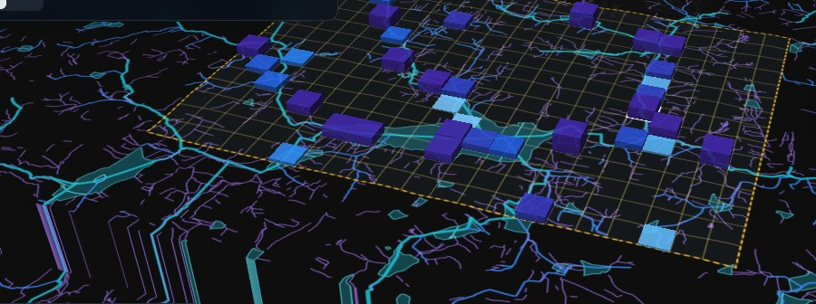

Predict the flood. Protect the future.
Flood simulation, early warning and AI-assisted response planning for Bellandur–Marathahalli, Bengaluru.
Problem statement FLOWSHIELD · Theme VECTOR
Team [name] · [member] · [member] · [member]

Live: flowshield-app.vercel.app · github.com/dingdongkkk/flowshield
CORE REQUIREMENTS
ALL 7 BONUS FEATURES
78,375 mapped buildings counted per cell as the exposure measure.
Real data: 6,839 mapped stormwater drains · 1,356 lakes and tanks · Copernicus elevation · OpenStreetMap buildings
Neural network trained on 4,000 of our own engine runs. Predicts peak depth within 5.6 cm on 572 held-out runs (R² 0.995) and scores 609 response plans instantly.
Drain upgrades, upstream detention, pumps and drain clearing, compared on the same storm: peak depth −21.5 cm, 0.85 million m³ less standing water.
21 automated engine checks, water balance to 10⁻⁶ m³, convergence under a halved time step, and a sensitivity sweep: 29–31 cells whichever way assumptions move.
Replay of the real 4–5 Sept 2022 storm against reported flood sites: 3 of 5 hit, but 51% by chance — so we report it as not yet better than chance.
The AI proposes; the physics decides — every number shown comes from the engine.